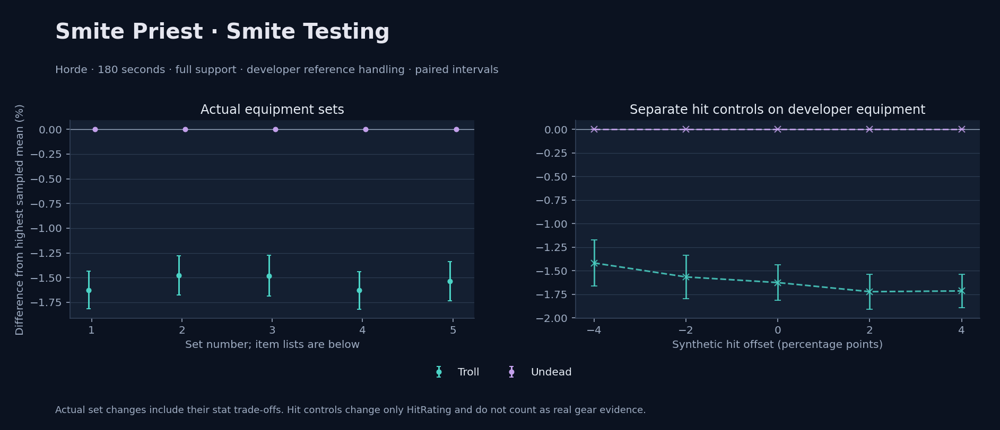

Horde · Troll / Undead

No pet or guardian appears in the reference combat metrics. Reference: Troll, developer equipment, 180 seconds and full support. Pet choices remain those of the developer build.
WoWSims developer · Smite Testing
180 seconds, full support and original developer references. Hit below is generic sheet melee / spell hit; school and talent bonuses can be attached directly to spells.
| Race | DPS | Gap and interval | Generic hit | Replay |
|---|---|---|---|---|
| Undead | 418.99 | +0.000% ± 0.000 | 0.0% / 0.0% | Native input · Website JSON |
| Troll | 412.18 | -1.625% ± 0.188 | 0.0% / 0.0% | Native input · Website JSON |
| Slot | Item | ID | Enchant |
|---|---|---|---|
| Head | Bad Hat | 260212 | |
| Neck | Chains of the Lich | 23125 | |
| Shoulder | Mantle of the Timbermaw | 19050 | |
| Back | Deep Woodlands Cloak | 19121 | |
| Chest | Ghostweave Vest | 14141 | |
| Wrist | Netherlight Cuffs | 254071 | |
| Hands | Radiant Gloves | 254105 | |
| Waist | Wisdom of the Timbermaw | 19047 | |
| Legs | Ghostweave Pants | 14144 | |
| Feet | Earthen Silk Slippers | 254013 | |
| Ring 1 | Jereman's Bauble | 275738 | |
| Ring 2 | Lorekeeper's Ring | 19523 | |
| Trinket 1 | Shard of the Splithooves | 10659 | |
| Trinket 2 | Jewel of the Guard Captain | 270225 | |
| Main hand | Wisepaw Totem | 274420 | |
| Ranged / relic | Brilliant Wand | 249385 |
Published ranked alternatives · Published pre-raid
Recorded source replacements: [{"slot": "back", "from": 11623, "to": 272411, "publishedAlternativeRank": 1, "publishedEpDelta": -0.8, "reason": "First published alternative compatible with the current WoWSims database, class, faction and occupied slots."}]
Unimplemented enchant or active set effects: [{"id": 181, "pieces": 2, "effects": ["+8 All Resistances."]}, {"id": 181, "pieces": 4, "effects": ["When struck in combat has a 2% chance of freezing the attacker in place for 3s. Can only occur once every 60 sec."]}]
Unmeasured proc rates: [{"source": "item", "id": 2243, "name": "Hand of Edward the Odd", "kind": "ppm", "origin": "vanilla"}]
180 seconds, full support and original developer references. Hit below is generic sheet melee / spell hit; school and talent bonuses can be attached directly to spells.
| Race | DPS | Gap and interval | Generic hit | Replay |
|---|---|---|---|---|
| Undead | 494.72 | +0.000% ± 0.000 | 1.0% / 1.0% | Native input · Website JSON |
| Troll | 487.42 | -1.476% ± 0.200 | 1.0% / 1.0% | Native input · Website JSON |
| Slot | Item | ID | Enchant |
|---|---|---|---|
| Head | Magister's Crown | 16686 | Arcanum of Focus |
| Neck | Archlight Talisman | 15856 | Enchant Necklace - Spell Power |
| Shoulder | Magister's Mantle | 16689 | |
| Back | Arcanoweave Cloak | 272411 | |
| Chest | Magister's Robes | 16688 | Mystic Rugged Armor Kit |
| Wrist | Magister's Bindings | 16683 | Enchant Bracer - Greater Spellpower |
| Hands | Magister's Gloves | 16684 | Enchant Gloves - Holy Power |
| Waist | Belt of the Archmage | 18405 | |
| Legs | Ghostweave Pants | 14144 | Arcanum of Focus |
| Feet | Magister's Boots | 16682 | Mystic Rugged Armor Kit |
| Ring 1 | Maiden's Circle | 13001 | |
| Ring 2 | Maiden's Circle | 13001 | |
| Trinket 1 | Weakness Analyzer | 272438 | |
| Trinket 2 | Shard of the Splithooves | 10659 | |
| Main hand | Hand of Edward the Odd | 2243 | |
| Off hand | Spirit of Aquementas | 11904 | Enchant Off-Hand - Excellent Spirit |
| Ranged / relic | Greater Eternal Wand | 249237 |
Published one-slot hit alternative · Published pre-raid
One source-listed alternative; at least 80% of the source slot score retained. Reported hit selects the contrast; only native stats determine simulation outcomes. This is an experimental combination, not an endorsed best set.
Recorded source replacements: [{"slot": "back", "from": 11623, "to": 272411, "publishedAlternativeRank": 1, "publishedEpDelta": -0.8, "reason": "First published alternative compatible with the current WoWSims database, class, faction and occupied slots."}]
Unimplemented enchant or active set effects: [{"id": 181, "pieces": 2, "effects": ["+8 All Resistances."]}, {"id": 181, "pieces": 4, "effects": ["When struck in combat has a 2% chance of freezing the attacker in place for 3s. Can only occur once every 60 sec."]}]
Unmeasured proc rates: [{"source": "item", "id": 2243, "name": "Hand of Edward the Odd", "kind": "ppm", "origin": "vanilla"}]
180 seconds, full support and original developer references. Hit below is generic sheet melee / spell hit; school and talent bonuses can be attached directly to spells.
| Race | DPS | Gap and interval | Generic hit | Replay |
|---|---|---|---|---|
| Undead | 493.04 | +0.000% ± 0.000 | 0.0% / 0.0% | Native input · Website JSON |
| Troll | 485.75 | -1.480% ± 0.207 | 0.0% / 0.0% | Native input · Website JSON |
| Slot | Item | ID | Enchant |
|---|---|---|---|
| Head | Magister's Crown | 16686 | Arcanum of Focus |
| Neck | Archlight Talisman | 15856 | Enchant Necklace - Spell Power |
| Shoulder | Magister's Mantle | 16689 | |
| Back | Hide of the Wild | 18510 | |
| Chest | Magister's Robes | 16688 | Mystic Rugged Armor Kit |
| Wrist | Magister's Bindings | 16683 | Enchant Bracer - Greater Spellpower |
| Hands | Magister's Gloves | 16684 | Enchant Gloves - Holy Power |
| Waist | Belt of the Archmage | 18405 | |
| Legs | Ghostweave Pants | 14144 | Arcanum of Focus |
| Feet | Magister's Boots | 16682 | Mystic Rugged Armor Kit |
| Ring 1 | Maiden's Circle | 13001 | |
| Ring 2 | Maiden's Circle | 13001 | |
| Trinket 1 | Weakness Analyzer | 272438 | |
| Trinket 2 | Shard of the Splithooves | 10659 | |
| Main hand | Hand of Edward the Odd | 2243 | |
| Off hand | Spirit of Aquementas | 11904 | Enchant Off-Hand - Excellent Spirit |
| Ranged / relic | Greater Eternal Wand | 249237 |
Published ranked alternatives · Published pre-raid
Recorded source replacements: [{"slot": "shoulder", "from": 227808, "to": 19050, "publishedAlternativeRank": 1, "publishedEpDelta": -11.2, "reason": "First published alternative compatible with the current WoWSims database, class, faction and occupied slots."}, {"slot": "back", "from": 11623, "to": 272411, "publishedAlternativeRank": 1, "publishedEpDelta": -0.8, "reason": "First published alternative compatible with the current WoWSims database, class, faction and occupied slots."}, {"slot": "waist", "from": 228190, "to": 18405, "publishedAlternativeRank": 1, "publishedEpDelta": -3, "reason": "First published alternative compatible with the current WoWSims database, class, faction and occupied slots."}]
Unimplemented enchant or active set effects: [{"id": 181, "pieces": 2, "effects": ["+8 All Resistances."]}, {"id": 181, "pieces": 4, "effects": ["When struck in combat has a 2% chance of freezing the attacker in place for 3s. Can only occur once every 60 sec."]}]
Unmeasured proc rates: [{"source": "item", "id": 2243, "name": "Hand of Edward the Odd", "kind": "ppm", "origin": "vanilla"}]
180 seconds, full support and original developer references. Hit below is generic sheet melee / spell hit; school and talent bonuses can be attached directly to spells.
| Race | DPS | Gap and interval | Generic hit | Replay |
|---|---|---|---|---|
| Undead | 503.11 | +0.000% ± 0.000 | 1.9% / 1.9% | Native input · Website JSON |
| Troll | 494.91 | -1.628% ± 0.191 | 1.9% / 1.9% | Native input · Website JSON |
| Slot | Item | ID | Enchant |
|---|---|---|---|
| Head | Magister's Crown | 16686 | Arcanum of Focus |
| Neck | Archlight Talisman | 15856 | Enchant Necklace - Spell Power |
| Shoulder | Mantle of the Timbermaw | 19050 | |
| Back | Arcanoweave Cloak | 272411 | |
| Chest | Magister's Robes | 16688 | Mystic Rugged Armor Kit |
| Wrist | Magister's Bindings | 16683 | Enchant Bracer - Greater Spellpower |
| Hands | Magister's Gloves | 16684 | Enchant Gloves - Holy Power |
| Waist | Belt of the Archmage | 18405 | |
| Legs | Magister's Leggings | 16687 | Arcanum of Focus |
| Feet | Magister's Boots | 16682 | Mystic Rugged Armor Kit |
| Ring 1 | Maiden's Circle | 13001 | |
| Ring 2 | Maiden's Circle | 13001 | |
| Trinket 1 | Weakness Analyzer | 272438 | |
| Trinket 2 | Shard of the Splithooves | 10659 | |
| Main hand | Hand of Edward the Odd | 2243 | |
| Off hand | Spirit of Aquementas | 11904 | Enchant Off-Hand - Excellent Spirit |
| Ranged / relic | Brilliant Wand | 249385 |
Published one-slot hit alternative · Published pre-raid
One source-listed alternative; at least 80% of the source slot score retained. Reported hit selects the contrast; only native stats determine simulation outcomes. This is an experimental combination, not an endorsed best set.
Recorded source replacements: [{"slot": "shoulder", "from": 227808, "to": 19050, "publishedAlternativeRank": 1, "publishedEpDelta": -11.2, "reason": "First published alternative compatible with the current WoWSims database, class, faction and occupied slots."}, {"slot": "back", "from": 11623, "to": 272411, "publishedAlternativeRank": 1, "publishedEpDelta": -0.8, "reason": "First published alternative compatible with the current WoWSims database, class, faction and occupied slots."}, {"slot": "waist", "from": 228190, "to": 18405, "publishedAlternativeRank": 1, "publishedEpDelta": -3, "reason": "First published alternative compatible with the current WoWSims database, class, faction and occupied slots."}]
Unimplemented enchant or active set effects: [{"id": 181, "pieces": 2, "effects": ["+8 All Resistances."]}, {"id": 181, "pieces": 4, "effects": ["When struck in combat has a 2% chance of freezing the attacker in place for 3s. Can only occur once every 60 sec."]}]
Unmeasured proc rates: [{"source": "item", "id": 2243, "name": "Hand of Edward the Odd", "kind": "ppm", "origin": "vanilla"}]
180 seconds, full support and original developer references. Hit below is generic sheet melee / spell hit; school and talent bonuses can be attached directly to spells.
| Race | DPS | Gap and interval | Generic hit | Replay |
|---|---|---|---|---|
| Undead | 501.84 | +0.000% ± 0.000 | 0.9% / 0.9% | Native input · Website JSON |
| Troll | 494.12 | -1.538% ± 0.198 | 0.9% / 0.9% | Native input · Website JSON |
| Slot | Item | ID | Enchant |
|---|---|---|---|
| Head | Magister's Crown | 16686 | Arcanum of Focus |
| Neck | Archlight Talisman | 15856 | Enchant Necklace - Spell Power |
| Shoulder | Mantle of the Timbermaw | 19050 | |
| Back | Hide of the Wild | 18510 | |
| Chest | Magister's Robes | 16688 | Mystic Rugged Armor Kit |
| Wrist | Magister's Bindings | 16683 | Enchant Bracer - Greater Spellpower |
| Hands | Magister's Gloves | 16684 | Enchant Gloves - Holy Power |
| Waist | Belt of the Archmage | 18405 | |
| Legs | Magister's Leggings | 16687 | Arcanum of Focus |
| Feet | Magister's Boots | 16682 | Mystic Rugged Armor Kit |
| Ring 1 | Maiden's Circle | 13001 | |
| Ring 2 | Maiden's Circle | 13001 | |
| Trinket 1 | Weakness Analyzer | 272438 | |
| Trinket 2 | Shard of the Splithooves | 10659 | |
| Main hand | Hand of Edward the Odd | 2243 | |
| Off hand | Spirit of Aquementas | 11904 | Enchant Off-Hand - Excellent Spirit |
| Ranged / relic | Brilliant Wand | 249385 |
The same declared pool is available to every race. Each race keeps its best validation-sample set with its screening-selected racial policy. Separate samples confirm that choice, with fresh precision samples near the practical-loss boundary. Gaps use the highest sampled mean under that same duration, support and reference treatment as their reference. A zero reference gap does not certify a race; the main matrix also allows uncertainty in the leader.
| Pool | Seconds | Support | References | Race | DPS | Gap and interval | Racial policies / mana | Selected set | Generic hit: melee / spell | Replay |
|---|---|---|---|---|---|---|---|---|---|---|
| published-pre-raid | 60 | full | developer | Troll | 586.83 | +0.000% ± 0.00020,000 iterations | developer / developer / developerMana waits 0.0s | published-priest-smite-horde-a4b8eda20a3b77b3 | 1.0% / 1.0% | Input · Result · Stats |
| published-pre-raid | 60 | full | developer | Undead | 585.52 | -0.224% ± 0.04220,000 iterations | developer / developer / developerMana waits 0.0s | published-priest-smite-horde-a4b8eda20a3b77b3 | 1.0% / 1.0% | Input · Result · Stats |
| published-pre-raid | 60 | full | explicit | Troll | 586.83 | +0.000% ± 0.00020,000 iterations | developer / developer / developerMana waits 0.0s | published-priest-smite-horde-a4b8eda20a3b77b3 | 1.0% / 1.0% | Input · Result · Stats |
| published-pre-raid | 60 | full | explicit | Undead | 585.52 | -0.224% ± 0.04220,000 iterations | developer / developer / developerMana waits 0.0s | published-priest-smite-horde-a4b8eda20a3b77b3 | 1.0% / 1.0% | Input · Result · Stats |
| published-pre-raid | 60 | self | developer | Troll | 445.30 | +0.000% ± 0.0005,000 iterations | developer / developer / developerMana waits 0.0s | published-priest-smite-horde-66b58e8a692addca | 1.9% / 1.9% | Input · Result · Stats |
| published-pre-raid | 60 | self | developer | Undead | 444.84 | -0.103% ± 0.0895,000 iterations | developer / developer / developerMana waits 0.0s | published-priest-smite-horde-66b58e8a692addca | 1.9% / 1.9% | Input · Result · Stats |
| published-pre-raid | 60 | self | explicit | Troll | 445.30 | +0.000% ± 0.0005,000 iterations | developer / developer / developerMana waits 0.0s | published-priest-smite-horde-66b58e8a692addca | 1.9% / 1.9% | Input · Result · Stats |
| published-pre-raid | 60 | self | explicit | Undead | 444.84 | -0.103% ± 0.0895,000 iterations | developer / developer / developerMana waits 0.0s | published-priest-smite-horde-66b58e8a692addca | 1.9% / 1.9% | Input · Result · Stats |
| published-pre-raid | 180 | full | developer | Undead | 502.27 | +0.000% ± 0.0005,000 iterations | developer / developer / developerMana waits 0.0s | published-priest-smite-horde-66b58e8a692addca | 1.9% / 1.9% | Input · Result · Stats · Website JSON |
| published-pre-raid | 180 | full | developer | Troll | 494.42 | -1.562% ± 0.0855,000 iterations | developer / developer / developerMana waits 0.0s | published-priest-smite-horde-66b58e8a692addca | 1.9% / 1.9% | Input · Result · Stats · Website JSON |
| published-pre-raid | 180 | full | explicit | Undead | 502.27 | +0.000% ± 0.0005,000 iterations | developer / developer / developerMana waits 0.0s | published-priest-smite-horde-66b58e8a692addca | 1.9% / 1.9% | Input · Result · Stats |
| published-pre-raid | 180 | full | explicit | Troll | 494.42 | -1.562% ± 0.0855,000 iterations | developer / developer / developerMana waits 0.0s | published-priest-smite-horde-66b58e8a692addca | 1.9% / 1.9% | Input · Result · Stats |
| published-pre-raid | 180 | self | developer | Undead | 279.99 | +0.000% ± 0.0005,000 iterations | developer / developer / developerMana waits 0.0s | published-priest-smite-horde-66b58e8a692addca | 1.9% / 1.9% | Input · Result · Stats |
| published-pre-raid | 180 | self | developer | Troll | 275.68 | -1.541% ± 0.0745,000 iterations | developer / developer / developerMana waits 0.0s | published-priest-smite-horde-66b58e8a692addca | 1.9% / 1.9% | Input · Result · Stats |
| published-pre-raid | 180 | self | explicit | Undead | 279.99 | +0.000% ± 0.0005,000 iterations | developer / developer / developerMana waits 0.0s | published-priest-smite-horde-66b58e8a692addca | 1.9% / 1.9% | Input · Result · Stats |
| published-pre-raid | 180 | self | explicit | Troll | 275.68 | -1.541% ± 0.0745,000 iterations | developer / developer / developerMana waits 0.0s | published-priest-smite-horde-66b58e8a692addca | 1.9% / 1.9% | Input · Result · Stats |
| published-pre-raid | 300 | full | developer | Undead | 451.79 | +0.000% ± 0.0005,000 iterations | developer / developer / developerMana waits 0.0s | published-priest-smite-horde-66b58e8a692addca | 1.9% / 1.9% | Input · Result · Stats |
| published-pre-raid | 300 | full | developer | Troll | 444.87 | -1.532% ± 0.0685,000 iterations | developer / developer / developerMana waits 0.0s | published-priest-smite-horde-66b58e8a692addca | 1.9% / 1.9% | Input · Result · Stats |
| published-pre-raid | 300 | full | explicit | Undead | 451.79 | +0.000% ± 0.0005,000 iterations | developer / developer / developerMana waits 0.0s | published-priest-smite-horde-66b58e8a692addca | 1.9% / 1.9% | Input · Result · Stats |
| published-pre-raid | 300 | full | explicit | Troll | 444.87 | -1.532% ± 0.0685,000 iterations | developer / developer / developerMana waits 0.0s | published-priest-smite-horde-66b58e8a692addca | 1.9% / 1.9% | Input · Result · Stats |
| published-pre-raid | 300 | self | developer | Undead | 245.55 | +0.000% ± 0.0005,000 iterations | developer / developer / developerMana waits 0.0s | published-priest-smite-horde-66b58e8a692addca | 1.9% / 1.9% | Input · Result · Stats |
| published-pre-raid | 300 | self | developer | Troll | 240.76 | -1.952% ± 0.0635,000 iterations | developer / developer / developerMana waits 0.0s | published-priest-smite-horde-66b58e8a692addca | 1.9% / 1.9% | Input · Result · Stats |
| published-pre-raid | 300 | self | explicit | Undead | 245.55 | +0.000% ± 0.0005,000 iterations | developer / developer / developerMana waits 0.0s | published-priest-smite-horde-66b58e8a692addca | 1.9% / 1.9% | Input · Result · Stats |
| published-pre-raid | 300 | self | explicit | Troll | 240.76 | -1.952% ± 0.0635,000 iterations | developer / developer / developerMana waits 0.0s | published-priest-smite-horde-66b58e8a692addca | 1.9% / 1.9% | Input · Result · Stats |
| developer-reference | 60 | full | developer | Troll | 526.65 | +0.000% ± 0.00020,000 iterations | developer / developer / developerMana waits 0.0s | developer | 0.0% / 0.0% | Input · Result · Stats |
| developer-reference | 60 | full | developer | Undead | 525.63 | -0.195% ± 0.04220,000 iterations | developer / developer / developerMana waits 0.0s | developer | 0.0% / 0.0% | Input · Result · Stats |
| developer-reference | 60 | full | explicit | Troll | 526.65 | +0.000% ± 0.00020,000 iterations | developer / developer / developerMana waits 0.0s | developer | 0.0% / 0.0% | Input · Result · Stats |
| developer-reference | 60 | full | explicit | Undead | 525.63 | -0.195% ± 0.04220,000 iterations | developer / developer / developerMana waits 0.0s | developer | 0.0% / 0.0% | Input · Result · Stats |
| developer-reference | 60 | self | developer | Troll | 352.61 | +0.000% ± 0.0005,000 iterations | developer / developer / developerMana waits 0.0s | developer | 0.0% / 0.0% | Input · Result · Stats |
| developer-reference | 60 | self | developer | Undead | 350.60 | -0.568% ± 0.1125,000 iterations | developer / developer / developerMana waits 0.0s | developer | 0.0% / 0.0% | Input · Result · Stats |
| developer-reference | 60 | self | explicit | Troll | 352.61 | +0.000% ± 0.0005,000 iterations | developer / developer / developerMana waits 0.0s | developer | 0.0% / 0.0% | Input · Result · Stats |
| developer-reference | 60 | self | explicit | Undead | 350.60 | -0.568% ± 0.1125,000 iterations | developer / developer / developerMana waits 0.0s | developer | 0.0% / 0.0% | Input · Result · Stats |
| developer-reference | 180 | full | developer | Undead | 418.96 | +0.000% ± 0.0005,000 iterations | developer / developer / developerMana waits 0.0s | developer | 0.0% / 0.0% | Input · Result · Stats · Website JSON |
| developer-reference | 180 | full | developer | Troll | 411.80 | -1.709% ± 0.0845,000 iterations | developer / developer / developerMana waits 0.0s | developer | 0.0% / 0.0% | Input · Result · Stats · Website JSON |
| developer-reference | 180 | full | explicit | Undead | 418.96 | +0.000% ± 0.0005,000 iterations | developer / developer / developerMana waits 0.0s | developer | 0.0% / 0.0% | Input · Result · Stats |
| developer-reference | 180 | full | explicit | Troll | 411.80 | -1.709% ± 0.0845,000 iterations | developer / developer / developerMana waits 0.0s | developer | 0.0% / 0.0% | Input · Result · Stats |
| developer-reference | 180 | self | developer | Undead | 234.02 | +0.000% ± 0.0005,000 iterations | developer / developer / developerMana waits 0.0s | developer | 0.0% / 0.0% | Input · Result · Stats |
| developer-reference | 180 | self | developer | Troll | 229.35 | -1.996% ± 0.0835,000 iterations | developer / developer / developerMana waits 0.0s | developer | 0.0% / 0.0% | Input · Result · Stats |
| developer-reference | 180 | self | explicit | Undead | 234.02 | +0.000% ± 0.0005,000 iterations | developer / developer / developerMana waits 0.0s | developer | 0.0% / 0.0% | Input · Result · Stats |
| developer-reference | 180 | self | explicit | Troll | 229.35 | -1.996% ± 0.0835,000 iterations | developer / developer / developerMana waits 0.0s | developer | 0.0% / 0.0% | Input · Result · Stats |
| developer-reference | 300 | full | developer | Undead | 383.34 | +0.000% ± 0.0005,000 iterations | developer / developer / developerMana waits 0.0s | developer | 0.0% / 0.0% | Input · Result · Stats |
| developer-reference | 300 | full | developer | Troll | 377.36 | -1.560% ± 0.0705,000 iterations | developer / developer / developerMana waits 0.0s | developer | 0.0% / 0.0% | Input · Result · Stats |
| developer-reference | 300 | full | explicit | Undead | 383.34 | +0.000% ± 0.0005,000 iterations | developer / developer / developerMana waits 0.0s | developer | 0.0% / 0.0% | Input · Result · Stats |
| developer-reference | 300 | full | explicit | Troll | 377.36 | -1.560% ± 0.0705,000 iterations | developer / developer / developerMana waits 0.0s | developer | 0.0% / 0.0% | Input · Result · Stats |
| developer-reference | 300 | self | developer | Undead | 210.38 | +0.000% ± 0.0005,000 iterations | developer / developer / developerMana waits 0.0s | developer | 0.0% / 0.0% | Input · Result · Stats |
| developer-reference | 300 | self | developer | Troll | 205.47 | -2.331% ± 0.0635,000 iterations | developer / developer / developerMana waits 0.0s | developer | 0.0% / 0.0% | Input · Result · Stats |
| developer-reference | 300 | self | explicit | Undead | 210.38 | +0.000% ± 0.0005,000 iterations | developer / developer / developerMana waits 0.0s | developer | 0.0% / 0.0% | Input · Result · Stats |
| developer-reference | 300 | self | explicit | Troll | 205.47 | -2.331% ± 0.0635,000 iterations | developer / developer / developerMana waits 0.0s | developer | 0.0% / 0.0% | Input · Result · Stats |
180 seconds, full support and the developer equipment anchor. These checks test creature sensitivity without a full gear search.
| Target | References | Race | DPS | Gap and interval | Replay |
|---|---|---|---|---|---|
| beast | developer | Troll | 430.37 | +0.000% ± 0.000 | Input · Result |
| beast | developer | Undead | 418.99 | -2.643% ± 0.186 | Input · Result |
| beast | explicit | Troll | 430.37 | +0.000% ± 0.000 | Input · Result |
| beast | explicit | Undead | 418.99 | -2.643% ± 0.186 | Input · Result |
| elemental | developer | Undead | 418.99 | +0.000% ± 0.000 | Input · Result |
| elemental | developer | Troll | 412.18 | -1.625% ± 0.188 | Input · Result |
| elemental | explicit | Undead | 418.99 | +0.000% ± 0.000 | Input · Result |
| elemental | explicit | Troll | 412.18 | -1.625% ± 0.188 | Input · Result |
Some equipment has unimplemented enchant or set effects; Some equipment uses unmeasured proc rates
Some items may display and use stats a litle higher than their original value.; Procs from Weapons, Trinkets and other Items are not yet supported
These known-issue notes are source context. Runtime checks establish current cast coverage, including Mutilate. They do not prove every mechanic matches the game.